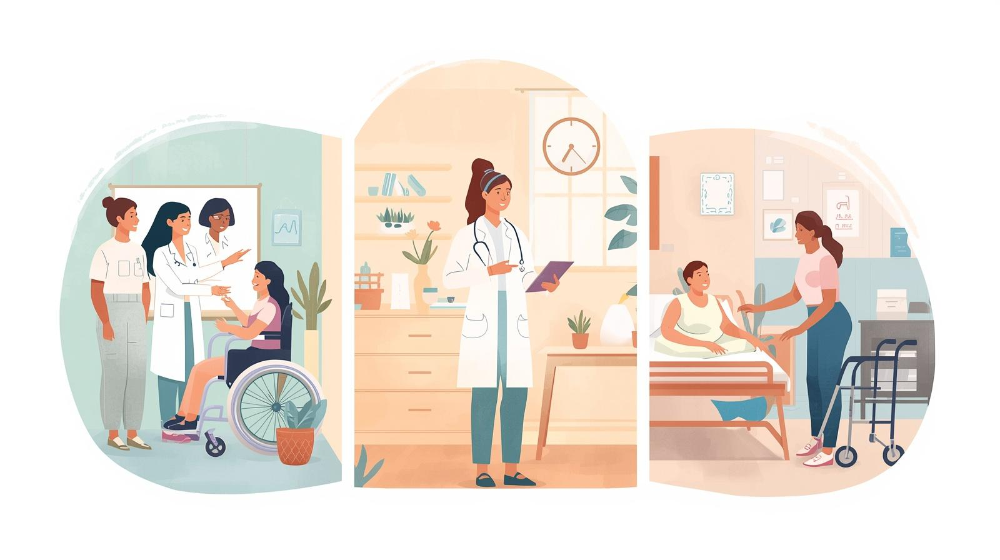

Formacions i assessorament personalitzades
Oferim la formació que més s'adapti a cada centre. Assessorem als domicilis els tipus d'ajudes que es poden acullir. Assessorem de les ajudes tècniques que poden facilitar el seu dia dia.
Formació
1- Formem professionals en els seus centres mèdics, ja siguin hospitals, centres de salud o residències
2- Formem cuidadors no professionals, per tal de que puguin realitzar les seves tasques diaries amb seguretat
3- Formem al nostre equip, reciclant els seus coneixements i incorporant totes les novetats
Oferim la formació que més s'adapti a cada centre. Assessorem als domicilis els tipus d'ajudes que es poden acullir. Assessorem de les ajudes tècniques que poden facilitar el seu dia dia.
